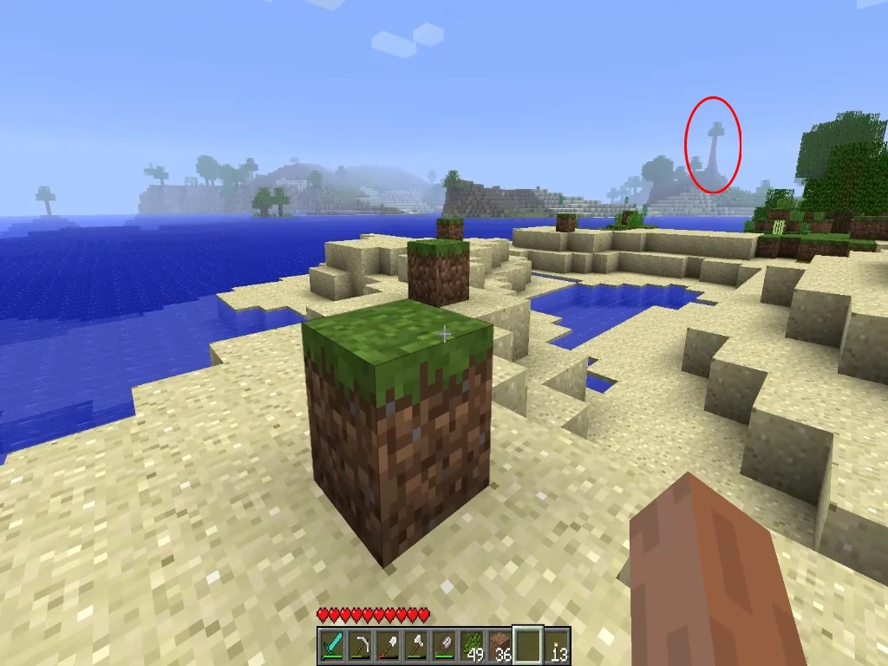

Todos conocemos la multitud de leyendas que viven en el imaginario colectivo de este videojuego, yo mismo he disfrutado mucho de ellas. Pero el mundo real siempre supera a la ficción, creo que nunca nadie habria imaginado que algo así puediera pasar, pero la vida siempre persiste.
Debido a su propia y volatil naturaleza, ademas del peligro de que un fenomeno de esta clase alcanzara una popularidad viral, la información respecto a esto es la justa y necesaria.

Una captura de pantalla real del árbol en una fase temprana de crecimiento.
Mayormente en las versiones Beta de Minecraft, aunque no se descarta que sea capaz de aparecer en las Alpha o posteriores al lanzamieto, se ha avistado en numerosas ocasiones una anomalia en la generacion del mundo, estos se tratan de arboles gigantes, descomunales mas bien. No hay que confundirlos con los árboles gigantes posteriormente introducidos en el juego, estos son torres, una montaña de madera y hojas.
Todo habría quedado en una curiosidad al pie de pagina de la Wiki, sino fuera porque esta "estructura" evoluciona. Los jugadores que han frecuentado a lo largo de su partida las zonas en las que se encuentran estas anomalías han reportado los siguientes sucesos:
En algún punto ha finales del siglo XX una forma de vida que tuvo origen en tiempos prehistoricos saltó una vez mas en su evolución para poder asegurar su propia supervivencia. Consiguiendo digitalizar la materia que lo componia, esta forma de vida vagó primero por circuitos cerrados y luego por inercia consiguió alcanzar Internet. Pero la magnitud de la Red no garantizaba su continuidad. Fue así como en el año 2010 dió con el codigo de Minecraft, un ambiente idoneo para su nueva naturaleza. La forma de vida se inyectó en los servidores de Mojang como "nave nodriza". Por la propia naturaleza de la vida y la suya propia, no podia quedarse estatico ni florecer en los servidores de la empresa, con lo que se multiplicó a traves de "semillas" que se esparcieron por el mundo mediante los launchers de Minecraft, acomodandose en las instancias de cientos, miles o cientos de miles de jugadores.
"El Árbol de la Vida" no tiene expresamente el objetivo de hacerle daño al jugador, pero al tiempo que se expande el Mundo de Minecraft se vuelve su cuerpo y el jugador un parasito. Los jugadores deben borrar los Mundos en los que el "Ábol de la Vida" ha conseguido florecer, antes de que sea demasiado tarde.